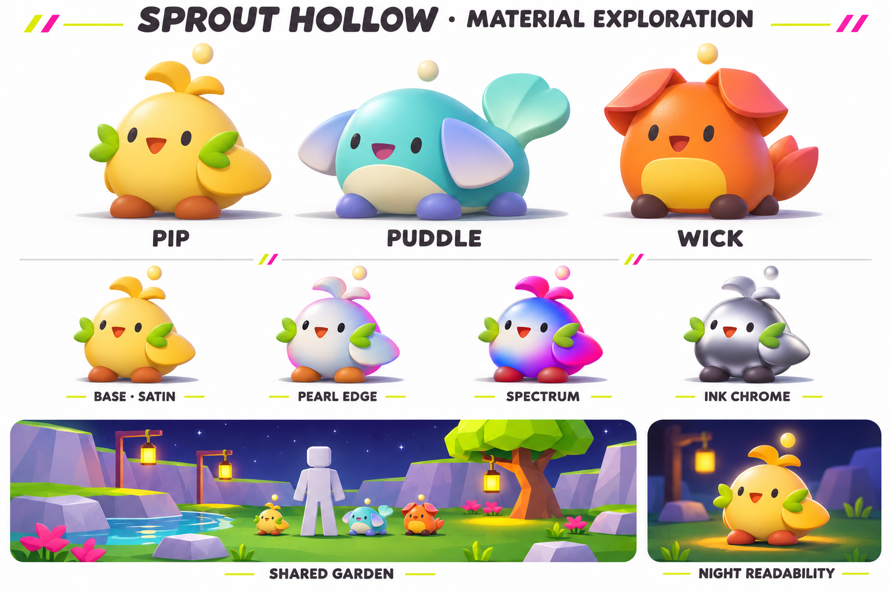
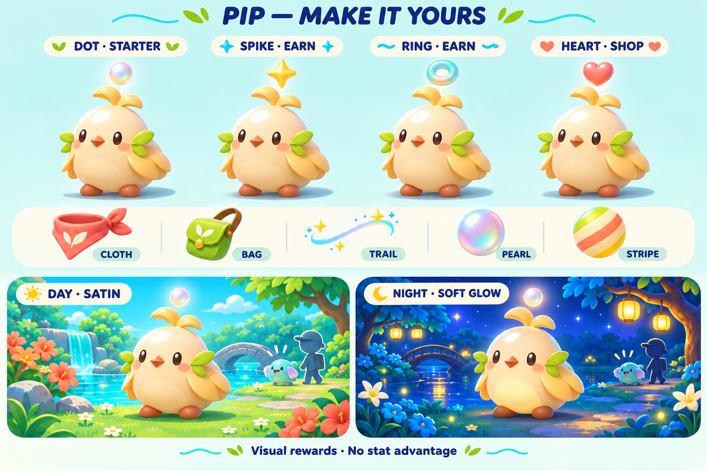
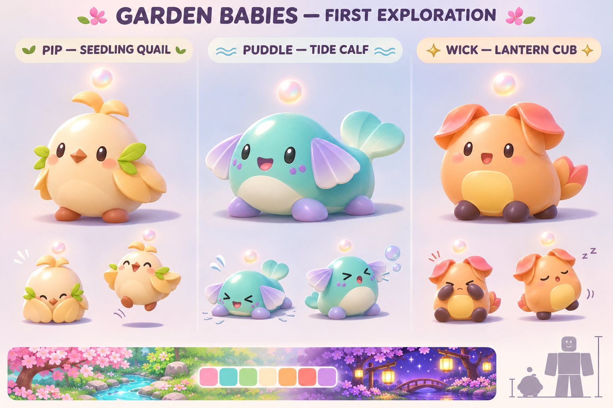

Sprout Hollow — baby garden proposal
Original pet and material explorations, reviewed by Astra. Concept art only; the garden redesign, models, new rewards and shop await feedback. Read the full proposal.

Primary direction V2 — revised using the actual painting palette and video material references. Satin is the base; the other finishes are optional visual studies.

Customization exploration — shapes and colors are independent. The base heart has an earned route; “shop” does not mean a required Robux purchase. Paid examples would be known, previewable cosmetics.

First silhouette exploration — before the transferred references arrived. Softer palette and stronger gloss are exploratory, not the final material specification.
All images were generated with the built-in image tool. Prompt set and reference notes.